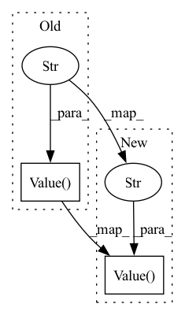

Pattern ID :16870
Before Change
self._activated: bool = False
self._queue: multiprocessing.Queue = multiprocessing.Queue(maxsize=queue_maxsize)
self._done = multiprocessing.Value("i" , 0)
def __enter__(self) -> DataQueue:
self.activate()
return selfAfter Change
self._queue: multiprocessing.Queue = multiprocessing.Queue(maxsize=queue_maxsize)
// Mypy 0.981 brought ""SynchronizedBase[Any]" has no attribute "value" [attr-defined]" bug.
// Therefore, add this type casting to pass Mypy checking.
self._done = cast(Synchronized, multiprocessing.Value("i" , 0) )
def __enter__(self) -> DataQueue:
self.activate()In pattern: SUPERPATTERN
Frequency: 3
Non-data size: 2
Instances Fragment ID: 56490908
Project Name: microsoft/qlib
Commit Name: 5eb5ac1f1f264b2da4d810b04ae60bd9ec37ce40
Time: 2023-02-12
Author: huoranli@microsoft.com
File Name: qlib/rl/utils/data_queue.py
M Class Name: DataQueue
N Class Name: DataQueue
M Method Name: __init__(6)
N Method Name: __init__(6)
M Parent Class: Subscript
N Parent Class: Subscript
M File Name: qlib/rl/utils/data_queue.py
N File Name: qlib/rl/utils/data_queue.py
M Start Line: 81
M End Line: 81
N Start Line: 84
N End Line: 84
Before Change
else:
raise NotImplementedError("Loss function {} not found".format(loss_func))
self.metrics = [metrics.MeanAbsoluteError(), metrics.MeanAbsoluteError(),
metrics.Loss(self.loss_fn), metrics.Value("RegLoss" ) ]
//// AR
self.n_lags = n_lagsAfter Change
else:
raise NotImplementedError("Loss function {} not found".format(loss_func))
self.metrics = [ metrics.Loss(self.loss_fn), metrics.MeanAbsoluteError(), metrics.MeanSquaredError()]
self.value_metrics = AttrDict({"RegLoss": metrics.Value("RegLoss" ) })
//// AR
self.n_lags = n_lags Fragment ID: 56490910
Project Name: ourownstory/neural_prophet
Commit Name: ea05689f7ccca059223f80c7bd85f8b7943e69d0
Time: 2020-06-16
Author: oskar.triebe@merantix.com
File Name: neuralprophet/neural_prophet.py
M Class Name: NeuralProphet
N Class Name: NeuralProphet
M Method Name: __init__(20)
N Method Name: __init__(20)
M Parent Class:
N Parent Class:
M File Name: neuralprophet/neural_prophet.py
N File Name: neuralprophet/neural_prophet.py
M Start Line: 122
M End Line: 130
N Start Line: 122
N End Line: 130
Before Change
"doc_id": nlp.Value("int32"), // The document"s S2ORC ID.
"title": nlp.Value("string"), // The title.
"abstract": nlp.features.Sequence(
{"sentence": nlp.Value("string" ) }
), // The abstract, written as a list of sentences.
"structured": nlp.Value("bool"), // Indicator for whether this is a structured abstract.
}After Change
features = {
"doc_id": nlp.Value("int32"), // The document"s S2ORC ID.
"title": nlp.Value("string"), // The title.
"abstract": nlp.features.Sequence(nlp.Value("string" )
), // The abstract, written as a list of sentences.
"structured": nlp.Value("bool"), // Indicator for whether this is a structured abstract.
}
else: Fragment ID: 56490916
Project Name: huggingface/datasets
Commit Name: 7d75d7087aa8b20f368c5cd710c1c432dc93bb15
Time: 2020-07-16
Author: 38249783+mariamabarham@users.noreply.github.com
File Name: datasets/scifact/scifact.py
M Class Name: Scifact
N Class Name: Scifact
M Method Name: _info(1)
N Method Name: _info(1)
M Parent Class: nlp.GeneratorBasedBuilder
N Parent Class: nlp.GeneratorBasedBuilder
M File Name: datasets/scifact/scifact.py
N File Name: datasets/scifact/scifact.py
M Start Line: 60
M End Line: 72
N Start Line: 59
N End Line: 70